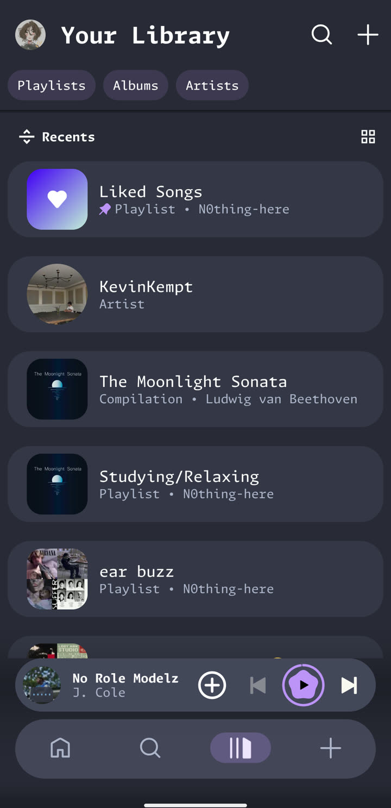

Content
Only what you want to see
Hide the parts of Spotify you never use. Hiding is cosmetic: nothing is removed from your account.
- podcastsPodcasts and audiobooks. Drop their filters and shelves from Home.
- view_dayHome sections. Pick any section Spotify has shown you and hide it.
- menu_openSide menu. Hide Recents, Listening stats, Your plan and more.
- tabPremium tab. Free accounts can take the Premium tab out of the bottom bar.
